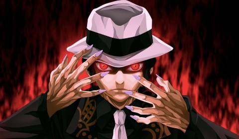

Muzan Kibutsuji (鬼き舞ぶ辻つじ無む惨ざん, Kibutsuji Muzan) es el antagonista principal de Kimetsu no Yaiba. Es un Demonio, siendo el primero en su clase, que ha vivido durante más de mil años, siendo como tal, el responsable del origen de los otros demonios, responsable de haber corrompido a Michikatsu Tsukiguni y ser quien asesinó a la familia de Tanjirō y Nezuko, convirtiendo a esta última en Demonio, siendo el desencadenante del deseo de venganza de Tanjirō hacia él.
